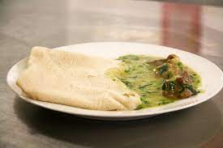
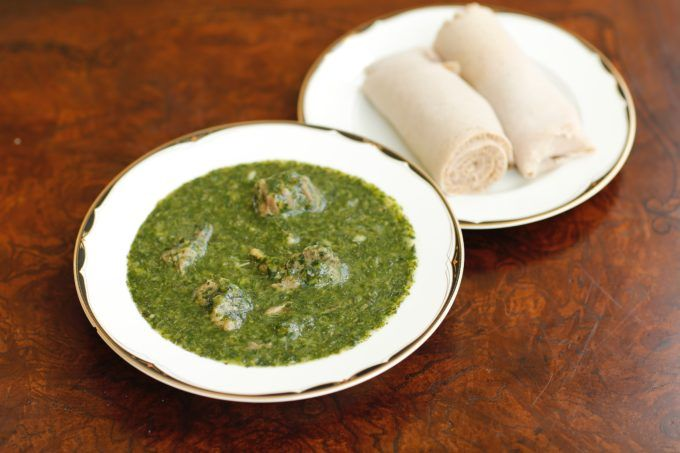

Kisra and combo
Classic Sudan/south Sudan paper-like flatbread made with fermented wheat flour.

Molokhia
Molokhia is a meal made of leaves cooked in a meat-based soup. Known as Jews mallow or jute plant.

mula lham
This is a delicious dish made from fresh okra and meat.

Nyama choma
Roast meat over grill.